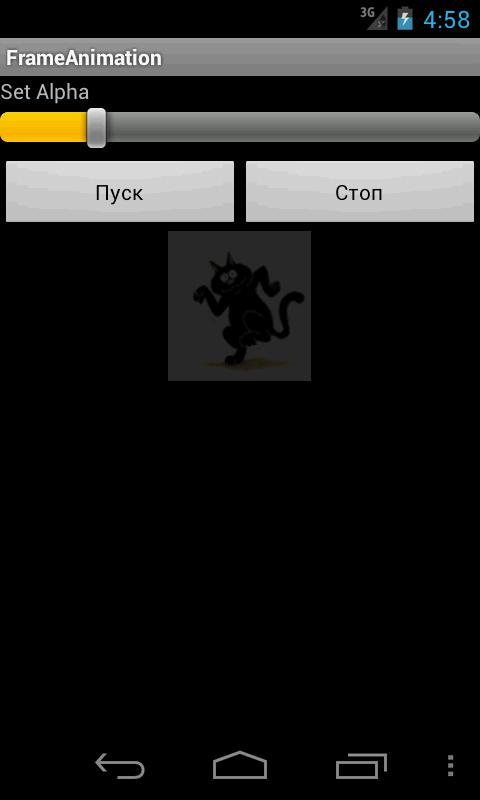

/* Моя кошка замечательно разбирается в программировании. Стоит мне объяснить проблему ей - и все становится ясно. */
John Robbins, Debugging Applications, Microsoft Press, 2000

/* Моя кошка замечательно разбирается в программировании. Стоит мне объяснить проблему ей - и все становится ясно. */
John Robbins, Debugging Applications, Microsoft Press, 2000
Пример с анимацией
Изменяем прозрачность
Анимация при загрузке приложения
Кадровая (фреймовая) анимация — традиционная анимация при помощи быстрой смены последовательных изображений, как на кинопленке. Данный вид анимации также используют XML-файлы в каталоге res/anim/.
Для кадровой анимации XML-файл состоит из корневого элемента <animation-list> и дочерних узлов <item>, каждый из которых определяет кадр, который имеет две составляющие:
<animation-list xmlns:android="http://schemas.android.com/apk/res/android"
android:oneshot="true">
<item android:drawable="@drawable/filel" android:duration="200"
<item android:drawable="@drawable/file2" android:duration="200"
<item android:drawable="@drawable/file3" android:duration="200"
</animation-list>
Это анимация будет выполняться только для трех кадров. При установке атрибута android:oneshot списка в true анимация повторится только один раз и после остановки будет содержать последний кадр. Если же атрибут установить в false, то анимация будет циклической. Данный XML-файл, сохраненный в каталоге res/anim/ проекта, можно добавить как фоновое изображение для представления и затем запустить анимацию.
Создадим новый проект и добавим на форму две кнопки для управления анимацией.
<?xml version="1.0" encoding="utf-8"?>
<LinearLayout xmlns:android="http://schemas.android.com/apk/res/android"
android:layout_width="fill_parent"
android:layout_height="fill_parent"
android:orientation="vertical" >
<LinearLayout
android:layout_width="fill_parent"
android:layout_height="wrap_content"
android:orientation="horizontal" >
<Button
android:id="@+id/btn_start"
android:layout_width="fill_parent"
android:layout_height="wrap_content"
android:layout_marginTop="10px"
android:layout_weight="1"
android:text="Пуск" />
<Button
android:id="@+id/btn_stop"
android:layout_width="fill_parent"
android:layout_height="wrap_content"
android:layout_marginTop="10px"
android:layout_weight="1"
android:text="Стоп" />
</LinearLayout>
<ImageView
android:id="@+id/image"
android:layout_width="wrap_content"
android:layout_height="wrap_content" />
</LinearLayout>
Для анимации подготовим заранее отобранные файлы, которые необходимо поместить в каталог res/drawable. Наша анимация будет состоять из восьми кадров. Время показа каждого кадра установим в 250 миллисекунд. Запишем наши настройки в XML-файл catanimation.xml в каталоге res/values/.
<animation-list
xmlns:android="http://schemas.android.com/apk/res/android"
android:oneshot="false">
<item android:drawable="@drawable/fitness1" android:duration="250"/>
<item android:drawable="@drawable/fitness2" android:duration="250"/>
<item android:drawable="@drawable/fitness3" android:duration="250"/>
<item android:drawable="@drawable/fitness4" android:duration="250"/>
<item android:drawable="@drawable/fitness5" android:duration="250"/>
<item android:drawable="@drawable/fitness6" android:duration="250"/>
<item android:drawable="@drawable/fitness7" android:duration="250"/>
<item android:drawable="@drawable/fitness8" android:duration="250"/>
</animation-list>
Получить объект AnimationDrawable в коде программы можно так:
ImageView image = (ImageView)findViewById(R.id.image);
image.setBackgroundResource(R.anim.catanimation);
AnimationDrawable animation (AnimationDrawable)image.getBackground();
Управлять объектом AnimationDrawable можно через методы start() и stop().
package ru.alexanderklimov.frameanimation;
import android.app.Activity;
import android.graphics.drawable.AnimationDrawable;
import android.os.Bundle;
import android.view.View;
import android.widget.Button;
import android.widget.ImageView;
public class FrameAnimationActivity extends Activity {
AnimationDrawable mAnim;
/** Called when the activity is first created. */
@Override
public void onCreate(Bundle savedInstanceState) {
super.onCreate(savedInstanceState);
setContentView(R.layout.main);
ImageView image = (ImageView)findViewById(R.id.image);
image.setBackgroundResource(R.anim.catanimation);
mAnim = (AnimationDrawable)image.getBackground();
final Button btnStart = (Button) findViewById(R.id.btn_start);
btnStart.setOnClickListener(new View.OnClickListener() {
public void onClick(View v) {
mAnim.start();
}
});
final Button btnStop = (Button) findViewById(R.id.btn_stop);
btnStop.setOnClickListener(new View.OnClickListener() {
public void onClick(View v) {
mAnim.stop();
}
});
}
}
Запустите приложение и посмотрите на анимацию. Надеюсь, вид кота, делающего упражнения, заставит вас с понедельника начать делать зарядку.

Также можно создавать анимацию в коде — достаточно загрузить последовательно ресурсы кадров и определить время показадля каждого кадра. В качестве примера создадим новый проект, взяв за основу предыдущее упражнение.
В основном классе определим два внутренних метода startFrameAnimation() и stopFrameAnimation(), которые будем вызывать при нажатии кнопок Пуск и Стоп.
В методе startFrameAnimation() реализуем создание анимации. Для этого надо получить кадры анимации в виде набора объектов Drawabie, загрузив изображения из ресурсов. Для каждого кадра создается отдельный объект Drawable:
BitmapDrawable framel =
(BitmapDrawable)getResources().getDrawable(R.drawable.fitnessl);
BitmapDrawable frame2 =
(BitmapDrawable)getResources().getDrawable(R.drawable.fitness2);
BitmapDrawable frame3
(BitmapDrawable)getResources().getDrawable(R.drawable.fitness3);
// ... и так далее
Созданные объекты BitmapDrawable необходимо добавить в объект AnimationDrawable методом addFrame(), который принимает два параметра: кадр анимации (объект Drawable) и продолжительность показа в миллисекундах.
AnimationDrawable mAnimation = new AnimationDrawable();
// устанавливаем циклическое повторение анимации
mAnimation.setOneShot(false);
mAnimation.addFrame(framel, 250);
mAnimation.addFrame(frame2, 250);
mAnimation.addFrame(frame3, 250);
Полный листинг будет следующим:
package ru.alexanderklimov.frameanimation;
import android.app.Activity;
import android.graphics.drawable.AnimationDrawable;
import android.graphics.drawable.BitmapDrawable;
import android.os.Bundle;
import android.view.View;
import android.widget.Button;
import android.widget.ImageView;
public class FrameAnimationActivity extends Activity {
private final static int DURATION = 250;
private AnimationDrawable mAnimation = null;
private ImageView mImage;
/** Called when the activity is first created. */
@Override
public void onCreate(Bundle savedInstanceState) {
super.onCreate(savedInstanceState);
setContentView(R.layout.main);
mImage = (ImageView) findViewById(R.id.image);
final Button btnStart = (Button) findViewById(R.id.btn_start);
btnStart.setOnClickListener(new View.OnClickListener() {
public void onClick(View v) {
startFrameAnimation();
}
});
final Button btnStop = (Button) findViewById(R.id.btn_stop);
btnStop.setOnClickListener(new View.OnClickListener() {
public void onClick(View v) {
stopFrameAnimation();
}
});
}
private void startFrameAnimation() {
BitmapDrawable frame1 = (BitmapDrawable) getResources().getDrawable(
R.drawable.fitness1);
BitmapDrawable frame2 = (BitmapDrawable) getResources().getDrawable(
R.drawable.fitness2);
BitmapDrawable frame3 = (BitmapDrawable) getResources().getDrawable(
R.drawable.fitness3);
BitmapDrawable frame4 = (BitmapDrawable) getResources().getDrawable(
R.drawable.fitness4);
BitmapDrawable frame5 = (BitmapDrawable) getResources().getDrawable(
R.drawable.fitness5);
BitmapDrawable frame6 = (BitmapDrawable) getResources().getDrawable(
R.drawable.fitness6);
BitmapDrawable frame7 = (BitmapDrawable) getResources().getDrawable(
R.drawable.fitness7);
BitmapDrawable frame8 = (BitmapDrawable) getResources().getDrawable(
R.drawable.fitness8);
mAnimation = new AnimationDrawable();
mAnimation.setOneShot(false);
mAnimation.addFrame(frame1, DURATION);
mAnimation.addFrame(frame2, DURATION);
mAnimation.addFrame(frame3, DURATION);
mAnimation.addFrame(frame4, DURATION);
mAnimation.addFrame(frame5, DURATION);
mAnimation.addFrame(frame6, DURATION);
mAnimation.addFrame(frame7, DURATION);
mAnimation.addFrame(frame8, DURATION);
mImage.setBackgroundDrawable(mAnimation);
if (!mAnimation.isRunning()) {
mAnimation.setVisible(true, true);
mAnimation.start();
}
}
private void stopFrameAnimation() {
if (mAnimation.isRunning()) {
mAnimation.stop();
mAnimation.setVisible(false, false);
}
}
}
В методах я также использовал проверку на работающую анимацию (isRunning()), хотя и без этой проверки всё работало. Но мало ли что.
Результат будет тот же самый (теоретически). У меня в эмуляторе почему-то работали только первые три кадра. На форумах многие пишут, что у них выводится только первый кадр. Отсюда можно сделать вывод, что не нужно использовать программную анимацию, а использовать анимацию через XML.
Класс AnimationDrawable имеет метод setAlpha(), позволяющий изменять прозрачность кадров от 255 до 0. Модифицируем предыдущий пример. Добавим на форму метку и ползунок:
<TextView
android:layout_width="fill_parent"
android:layout_height="wrap_content"
android:text="Set Alpha" />
<SeekBar
android:id="@+id/setalpha"
android:layout_width="fill_parent"
android:layout_height="wrap_content"
android:max="255"
android:progress="255" />
В коде программы добавим слушатель изменения ползунка:
SeekBar seekbarAnimationAlpha = (SeekBar) findViewById(R.id.setalpha);
seekbarAnimationAlpha
.setOnSeekBarChangeListener(new SeekBar.OnSeekBarChangeListener() {
@Override
public void onProgressChanged(SeekBar seekBar,
int progress, boolean fromUser) {
mAnimation.setAlpha(progress);
}
@Override
public void onStartTrackingTouch(SeekBar seekBar) {
// TODO Auto-generated method stub
}
@Override
public void onStopTrackingTouch(SeekBar seekBar) {
// TODO Auto-generated method stub
}
});

В документации по кадровой анимации имеется предупреждение, что при запуске программы анимация не запустится, так как не все необходимые классы подгружаются в момент старта приложения. В нашем примере мы использовали нажатия кнопок для запуска и остановки анимации, поэтому нам удалось избежать этой проблемы. А что же делать, если нам необходимо запустить анимацию сразу?
В этом случае придется усложнить код. Добавим новый класс:
class Starter implements Runnable {
public void run() {
mFrameAnimation.start();
}
}
А в основном классе из первого примера добавим строчку кода:
image.post(new Starter());
Теперь при запуске приложения анимация автоматически начнет проигрываться.
Также можно попробовать вызвать метод onWindowFocusChanged() (я не проверял, но должно сработать).